Day1 Linux、VScode与Git¶
一、Basic Linux¶
1. 文件和目录管理¶
列出当前目录下的文件列表
ls
显示当前工作目录的路径
pwd
进入目录
cd /path/to/directory（请替换需要进入的路径）
显示磁盘结构，包括各个磁盘的挂载点
lsblk
2. 系统监控和任务管理¶
显示任务管理器，监控系统进程
top
美化版的top，提供更直观的任务管理界面
btop
3. 清理屏幕¶
清空当前终端页面
clear
4. 网络和系统信息¶
查看curl命令的文档
man curl
查看当前IP地址
curl ip.sb
使用curl测试网络连接，使用谷歌可查看是否能访问外网
curl baidu.com
curl google.com
显示每个接口的详细信息
ip a
5. 文件传输和安装¶
使用scp命令进行文件传输
scp file.txt username@remotehost:/path/to/destination/
6. VIM快捷键¶
向下移动
J
向上移动
K
退出VIM（组合键）
esc
:q
7. Python和虚拟环境管理¶
创建Python虚拟环境，用于隔离项目的依赖环境
virtualenv venv
source activate venv/bin/activate
二、VScode¶
Extension¶
1.Remote¶
安装Remote插件, 然后进行服务器的登录操作 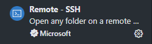
2.简体中文¶
如果不习惯看英文，可以安装简体中文的插件 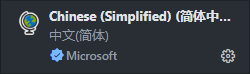
3.Python¶
VSCode中Python开发环境支持的插件 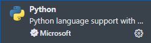
VSCode连接服务器¶
在安装好remote插件后，就可以连接到服务器了。
点击这个按钮： 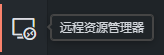
左边栏空空如也，点击这个加号按钮： 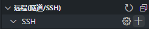
输入ssh连接命令： 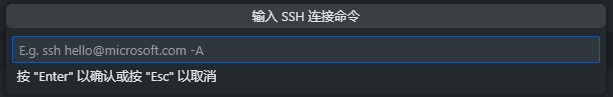
现在假设已经添加好了，点击刷新，左边就可以进行连接了。
这里用挂在校园网上的服务器举例： 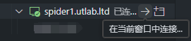
点击箭头，顶端搜索栏中会要求输入密码，输入正确后即可连接。
此时点击左边的资源管理器，画面如下： 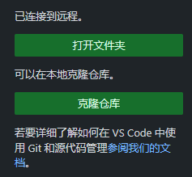
点击打开文件夹，就可以进入服务器中的文件夹了。
在你有权限的文件夹中，你可以进行文件的增删改等操作，请根据服务器不同位置的具体权限自行使用。
三、Git¶
首先请确保你的电脑已经安装了Git！
Git的安装网址如下： git-scm
如果你是MacOS系统，可以使用brew进行安装。
首次使用需要在命令行对个人信息进行初始化：
git config --global user.name 你的用户名
git config --global user.email 你的邮箱
这里的邮箱需要与你注册github的邮箱对应。为了方便，用户名和邮箱都使用Github的注册信息即可。
备注
如果你不想要重复输入密码，可以考虑使用:
cache 10800秒，之后失效, 默认15分钟
git config --global credential.helper 'cache --timeout=10800'
store, 永久有效，安全性欠佳
git config --global credential.helper store
命令行操作¶
如果你要把Github上的项目克隆到本地，分两种情况，操作都大同小异。
在后文，项目统一用repo代替，与github的repositories对应。
一、repo是你自己创建的/你参与协作且拥有访问权限¶
进入自己的repo，点击绿色的Code按钮，会找到一个https网址，把它复制下来。用这行代码克隆到你初始化的仓库，url即复制的网址。访问Github可以使用科学上网。
git clone 复制的url
命令行会反馈是否成功，如果不成功可能是网络问题。
二、repo是别人的，你想搬运来用¶
点击Fork按钮，将项目fork到你自己的repo中，随后在自己的repo中查看url并使用相同的命令。网址后的ID是你自己的才是正确的。
举例：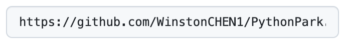
现在，你可以在本地对这个项目进行操作。
这里需要注意项目的法律条款协议。
当操作完成后，需要将项目推送到GitHub时,命令行进入工作文件夹。
git add .
将文件夹中的所有文件添加到工作区
git status
查看当前工作区状态，可以查看经过修改的文件
git commit -m "your message"
将修改好的内容提交到工作区，your message部分是你的提交信息，日志会更新在这里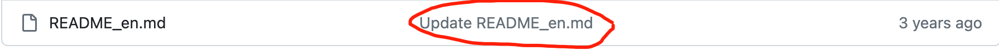
git push
将代码推送到GitHub，如果失败是网络问题。如果你要将你修改的代码提交到别人的repo中，第一次，要用到
git push --set-upstream origin
推送远程仓库，第一次可能需要登录。如果GitHub的仓库更新了，比如和别人共同协作一个repo，他提交了代码，你要同步
git pull
拉取最新的代码
如果在repo中有不同的分支
git branch 分支名
创建本地分支
git checkout -a
查看本地的所有分支
git checkout 分支名
切换到某分支
git branch - D 分支名
删除本地分支
git remote add origin url
将本地分支同步到远程分支
VSCode中源代码管理¶
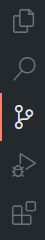
页面的左侧工具栏自上往下第三个是源代码管理，在这里可以对你代码的修改提交进行管理。
例如我对我的代码进行了修改，在源代码管理处就能看到我进行的修改。
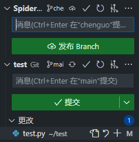
点击修改文件右边的加号，把修改提交到暂存区。
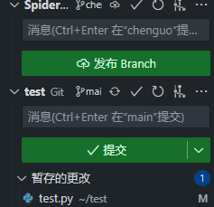
在将所有需要提交的文件提交到暂存区后，请输入修改信息，例如：
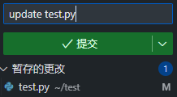
这里的修改信息请遵守规范。
编辑好信息后确认无误，请点击提交。
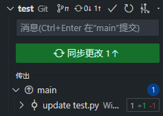
点击同步更改，即可将提交的更改进行推送。
界面的最上面，会有这个图标，请善用：
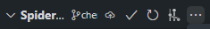
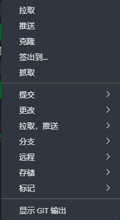
这里简单进行一下解释，可以参考上文的命令行操作进行比对。
拉取（pull）：如果你的代码版本和main分支下的代码不同，或者是有新的更新要从代码仓库拉取，请使用拉取
推送（push）：在提交了更改后，使用推送将代码推送到所在的分支
克隆（clone）：从URL克隆整个代码仓库到本地
签出到（branch）：切换分支
抓取（fetch）：与pull不同之处在于，fetch会下载远程分支的所有更新，但不会自动合并到本地分支
代码提交操作步骤¶
将仓库克隆到本地目录
切换到正确的分支，对代码进行修改
将所有要提交的修改添加到暂存区
确认无误后，提交修改，编辑符合规范的提交信息
将已提交的修改推送到远程仓库。如果分支需要合并，请在GitHub提交合并请求，由项目负责人检查代码后进行操作。如果推送到自己的分支，自己进行确认即可。